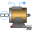

SMR_CurrentSourceTest example: Synchronous reluctance machine fed by current source |
|
Diagram
{kind=link}
Information
This information is part of the Modelica Standard Library maintained by the Modelica Association.
This example compares a time transient and a quasi static model of a synchronous reluctance machine. The machines are fed by a current source. The current components are oriented at the magnetic field orientation and transformed to the stator fixed reference frame. This way the machines are operated at constant torque. The machines start to accelerate from standstill.
Simulate for 2 seconds and plot (versus time):
smpm|smpmQS.wMechanical: machine speedsmpm|smpmQS.tauElectrical: machine torque
Parameters (8)
| VNominal |
Value: 100 Type: Voltage (V) Description: Nominal RMS voltage per phase |
|---|---|
| fNominal |
Value: smrData.fsNominal Type: Frequency (Hz) Description: Nominal frequency |
| f |
Value: 50 Type: Frequency (Hz) Description: Actual frequency |
| tRamp |
Value: 1 Type: Time (s) Description: Frequency ramp |
| TLoad |
Value: 181.4 Type: Torque (N·m) Description: Nominal load torque |
| tStep |
Value: 1.2 Type: Time (s) Description: Time of load torque step |
| JLoad |
Value: 0.29 Type: Inertia (kg·m²) Description: Load's moment of inertia |
| smrData |
Value: Type: SM_ReluctanceRotorData |
Components (34)
| signalCurrent |
Type: SignalCurrent |
|
|---|---|---|
| star |
Type: Star |
|
| ground |
Type: Ground |
|
| currentController |
Type: CurrentController |
|
| iq |
Type: Constant |
|
| id |
Type: Constant |
|
| voltageQuasiRMSSensor |
Type: VoltageQuasiRMSSensor |
|
| starM |
Type: Star |
|
| groundM |
Type: Ground |
|
| terminalBox |
Type: MultiTerminalBox |
|
| rotorDisplacementAngle |
Type: RotorDisplacementAngle |
|
| angleSensor |
Type: AngleSensor |
|
| inertiaLoad |
Type: Inertia |
|
| quadraticSpeedDependentTorque | ||
| currentRMSsensor |
Type: CurrentQuasiRMSSensor |
|
| inertiaLoadQS |
Type: Inertia |
|
| quadraticSpeedDependentTorqueQS | ||
| starMachineQS |
Type: Star |
|
| groundMQS |
Type: Ground |
|
| terminalBoxQS |
Type: MultiTerminalBox |
|
| currentControllerQS |
Type: CurrentController |
|
| angleSensorQS |
Type: AngleSensor |
|
| referenceCurrentSource |
Type: ReferenceCurrentSource |
|
| starQS |
Type: Star |
|
| groundeQS |
Type: Ground |
|
| resistorQS |
Type: Resistor |
|
| smrData |
Type: SM_ReluctanceRotorData |
|
|  | smrQS |
Type: SM_ReluctanceRotor |
| smr |
Type: SM_ReluctanceRotor |
|
| rotorAngleQS |
Type: RotorDisplacementAngle |
|
| currentRMSSensorQS |
Type: CurrentQuasiRMSSensor |
|
| voltageQuasiRMSSensorQS |
Type: VoltageQuasiRMSSensor |
|
| starMQS |
Type: Star |
|
| starMachine |
Type: Star |